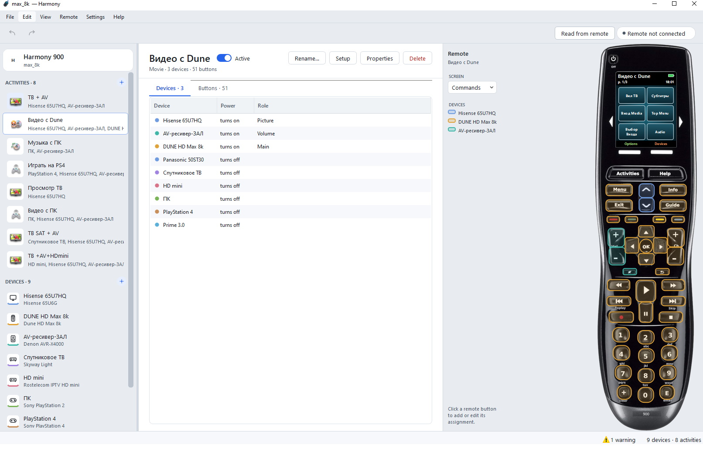

Настройте свой
Logitech Harmony.
Редактируйте устройства, активности и назначения кнопок. Обучайте ИК-команды и храните резервные копии без программы и облачного сервиса Logitech.
Бесплатно · Открытый код · Windows, Linux и macOS


Настройка пульта
Устройства, активности, экранные команды, макросы и задержки. Отмена правок и история конфигураций.
Работа с ИК-командами
Поиск устройств в базе ИК-кодов Logitech, определение по родному пульту и обучение команд.
Проверка перед записью
Проверка конфигурации, просмотр изменений и резервная копия перед записью на пульт.
Возможности
для вашей модели.
Чтение и запись проверены на настоящем Harmony 900 под Windows. Для остальных моделей доступна экспериментальная поддержка разного уровня.
| Пульт | Текущая поддержка |
|---|---|
| Harmony 900 | Чтение, редактирование и запись конфигураций. Проверено на пульте под Windows. |
| Harmony One, 600, 650, 665, 700 | Экспериментальное чтение по USB. Поддержка редактирования форматов этих моделей разрабатывается. |
| Harmony Hub | Экспериментальное чтение конфигурации по локальной сети. |
| Другие модели | Возможности переноса различаются. Каталог доступен через harmony-cli models. |
Чтение Harmony 665 ожидает проверки владельцем пульта. Связь с пультами под Linux и macOS требует аппаратной проверки.
Разметьте кнопки.
Задайте экран.
Встроенный редактор зон позволяет добавить или уточнить визуальный профиль пульта. Разместите зоны кнопок на фотографии, укажите идентификаторы и задайте область экрана.
Автоматическое определение зон, выравнивание и отмена правок помогают с разметкой. Разбор конфигурации и перенос по USB требуют поддержки модели.
Описание визуальных профилей ↗
Скачать Harmony.
Выберите установщик или переносимую версию в GitHub Releases. В каждом релизе есть консольная утилита и контрольные суммы SHA-256.
Windows-сборка не подписана, macOS-сборка использует ad-hoc-подпись. При первом запуске система может попросить разрешить открытие приложения.
Помогите добавить поддержку вашего пульта.
Если есть возможность, считайте конфигурацию своего Harmony и пришлите файл на don10077@mail.ru. В теме письма укажите модель, например «Конфигурация Harmony 665».
- Закройте программу Logitech и подключите один пульт по USB.
- В Harmony откройте Пульт → Файлы конфигурации — все модели… и выберите модель.
- Нажмите Прочитать конфигурацию в файл… и сохраните предложенный
*.remote.json. - Отправьте файл и название модели. При ошибке приложите её текст и файл, если он сохранился.
Для снятия копии используйте кнопку чтения. В файле содержатся конфигурация пульта и сведения об устройствах.